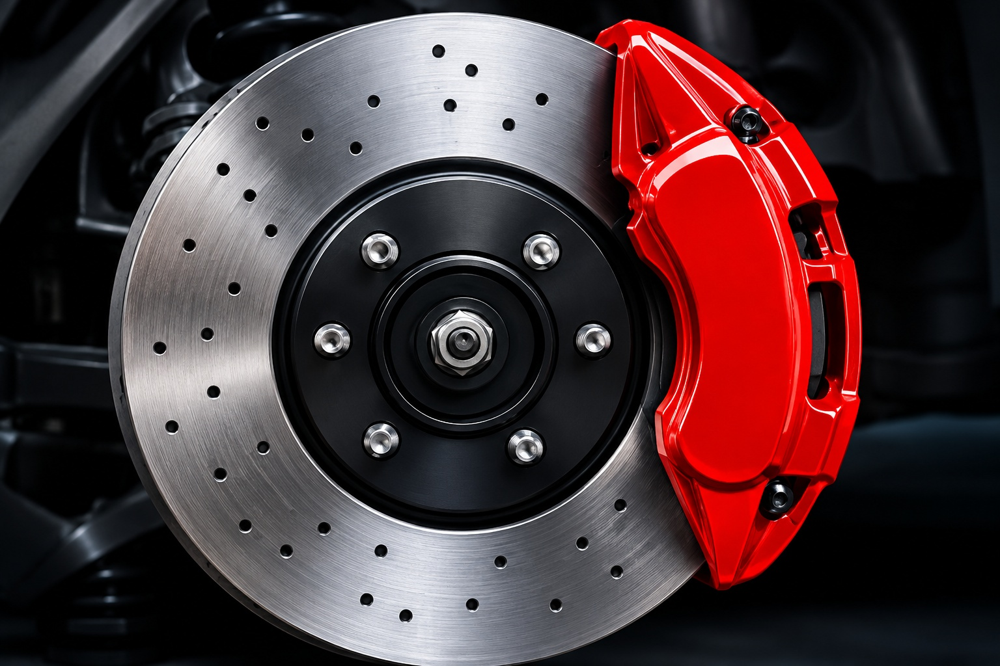
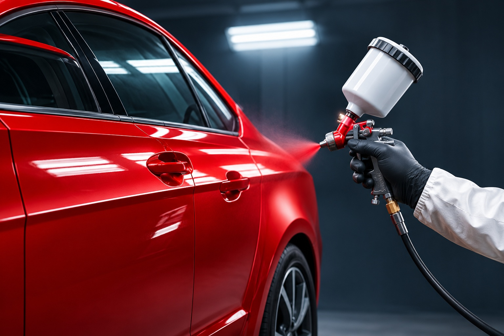

Skilled technicians
A workshop team focused on getting repairs and servicing done properly.
Your car’s favorite hangout spot.
From diagnostics and routine maintenance to mechanical repairs and bodywork, Le Mans Autoworks helps keep your vehicle ready for the road.
What we do
Automotive services for standard and 4WD/4x4 vehicles, from routine maintenance through diagnostics, repair and bodywork.
 Engine RepairMechanical support for engine-related faults and vehicle performance issues.Explore service →Computer DiagnosticsVehicle fault diagnosis to help identify issues before repair work begins.Explore service →Oil & MaintenanceOil changes and routine maintenance for dependable vehicle performance.Explore service →
Engine RepairMechanical support for engine-related faults and vehicle performance issues.Explore service →Computer DiagnosticsVehicle fault diagnosis to help identify issues before repair work begins.Explore service →Oil & MaintenanceOil changes and routine maintenance for dependable vehicle performance.Explore service → Wheel AlignmentWheel alignment support to improve handling and tyre wear.Explore service →
Wheel AlignmentWheel alignment support to improve handling and tyre wear.Explore service →
Brake ServiceBrake inspection and repair support for safer, more confident driving.Explore service → Battery & ElectricalBattery and vehicle electrical troubleshooting and support.Explore service →
Battery & ElectricalBattery and vehicle electrical troubleshooting and support.Explore service → Tyre ServicesTyre inspection and related vehicle tyre services.Explore service →
Tyre ServicesTyre inspection and related vehicle tyre services.Explore service →
Body ShopBody-shop services for vehicle exterior repair and restoration.Explore service → Kampala · Uganda
Kampala · UgandaAbout Le Mans Autoworks
Le Mans Autoworks is an automotive repair and maintenance workshop in Kampala, Uganda. The company provides repairs, diagnostics, maintenance, wheel alignment, oil changes and body-shop services.
The brand’s personality is captured in one simple idea: your car’s favourite hangout spot — a welcoming automotive culture backed by practical vehicle service.
Why choose us
A professional workshop experience with clear, practical service and attention to the vehicle in front of us.
A workshop team focused on getting repairs and servicing done properly.
Identify the problem first so the repair path is clearer.
A service mindset that values the small details that affect the customer experience.
A welcoming workshop experience backed by direct contact and convenient booking.
Our work
Workshop, customer and vehicle moments from the material supplied for the site.
Simple process
Tell us what your vehicle needs and choose a convenient service option.
Bring the vehicle in so the relevant system or issue can be assessed.
Discuss the findings and the work required before repair.
We complete the agreed work and get your vehicle ready for collection.
Ready when you are
Talk to Le Mans Autoworks in Kampala about your next service.